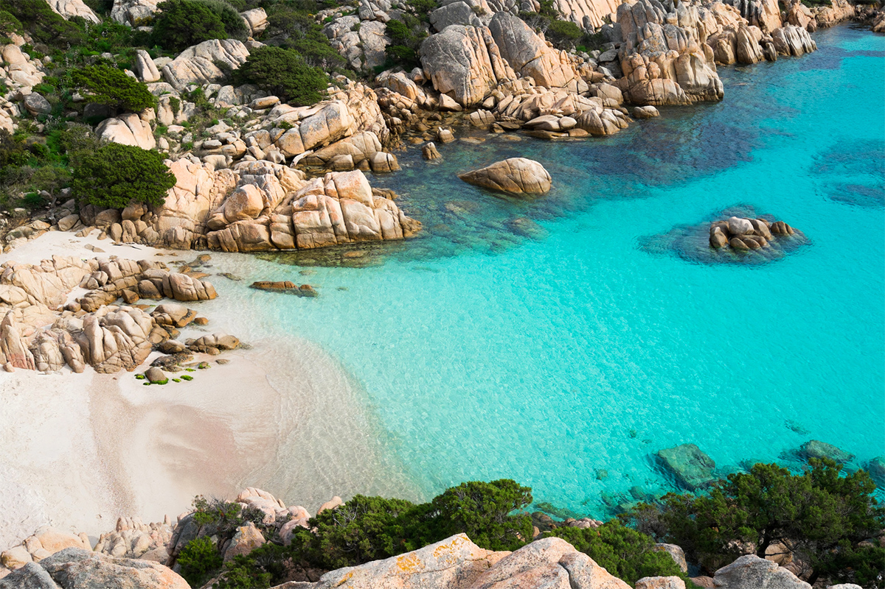

2026 · Two trips, one summer
Italy, two ways — mountains & sea
One trip climbs into the pre-Alps to a lake the color of slate glass. The other drops onto granite coves where the water runs Caribbean-turquoise. Pick a destination to open the full day-by-day itinerary.

☀ Coastal · Costa Smeralda
Sardinia
Granite coves, La Maddalena's turquoise water, and the most dramatic beaches in the Mediterranean.
View the itinerary
⛰ Lakeside · Lezzeno & Bellagio
Lake Como
A private beach at Filario, the Lovers' Walk in Varenna, and pasta worth the ferry ride.
View the itineraryWhere in Italy
Both trips sit inside Italy but couldn't feel more different — one on the water, one above it.
Getting between the two:
No direct drive — Sardinia is an island. Most travelers fly Olbia (OLB) → Milan (MXP/LIN), ~1h15m nonstop, then it's about 1h to Como by car or train. Figure a half-day door to door either way.
No direct drive — Sardinia is an island. Most travelers fly Olbia (OLB) → Milan (MXP/LIN), ~1h15m nonstop, then it's about 1h to Como by car or train. Figure a half-day door to door either way.
Top booking needs
Every currently-open item across both legs, in one place — full checklists (with contact info) still live on each trip's own Book Now tab. An item that touches both legs (like the connecting flight) is listed once.
Transportation
-
Sardinia → ComoPurchase Aeroitalia XZ2624 — Olbia → Milan Linate, Aug 10Priced (~€180 for 3, Classic fare) but not yet bought — closes out Sardinia and opens the Como leg, tracked once. See Sardinia Book Now ↗
-
SardiniaAdd Ghazal to Chase flight-alert contactsSo delay/gate updates go to her directly — done in Chase account/travel booking settings. See Sardinia Book Now ↗
Excursions
-
SardiniaBook Orosei charter — Palmasera Boat Rental, Aug 7Cala Luna & Cala Mariolu from Cala Gonone, ~9 AM departure typical. See Sardinia Book Now ↗
-
SardiniaReserve La Pelosa entry — Aug 9Required timed online reservation, €3.50pp — book via the 500-seat allocation now rather than waiting for the 48-hr release. See Sardinia Book Now ↗
-
ComoBook Cook with a View cooking class — Il Perlo, Wed Aug 12Small-group tour, sells out ahead — book via Viator before the date closes in. See Como Book Now ↗
Restaurants
-
SardiniaReserve CuCumiao — Palau dinner, Aug 8June–August is busy — reserve ahead. Alt: O'Belau. See Sardinia Book Now ↗
-
ComoTrattoria San Giacomo — Bellagio dinner, Aug 11No reservations taken — arrive at opening or expect a wait. See Como Book Now ↗
-
ComoReserve Il Cavatappi — Varenna lunch, Aug 13Dinner reservations accepted by phone; lunch tends to be walk-in, so arrive early. See Como Book Now ↗
-
ComoReserve Osteria Il Governo 1801 — last-night dinner, Aug 13Lezzeno, no travel needed — best-rated meal of the trip. See Como Book Now ↗